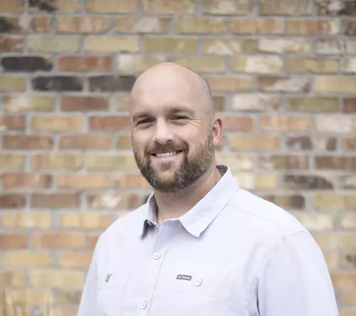

About
Cade Dopp
Cade Dopp started Educell because "it was more fun than watching Netflix". He enjoys working with students and teachers and loves to share his passion for education with his friends in Ghana. He has a master's degree in Instructional Design and Technology, another master's in Social Work, and a propensity to think outside of the box.
What We Do
We help schools and teachers in Africa to use low-cost technology and free instructional materials to improve outcomes in their classrooms.
Our partner-teachers leverage digital assessments to instantly understand student needs, and multimedia instructional materials to personalize instruction for every student.
We install the technology, train the teachers, and provide the instructional material.
Check out our Projects page to see some examples of our work.
Our Mission
Our mission is to provide every child on this earth with an opportunity to gain knowledge about the world,
power to act in it,
and desire to be self-reliant and compassionate.
Guiding Beliefs
The Creator gave each of us life on this Earth so that we could learn to live happily, as He does.
Our capacity for happiness increases with our capacity to love.
Our capacity to love increases as we learn to see things as they really are, and as we acquire the power to act accordingly.
Gaining vision and power is the heart of education.
Therapy
Leanna Dopp - CSW - Utah
Are you feeling stuck? Like you want your life to move forward or look a certain way, but you just don’t know how to get there? It’s okay! The feeling of stagnation could be due to lack of motivation, anxiety, depression, grief, loss or low self-esteem. Feeling stuck could also be a result of not understanding your own needs and emotions, or relationship concerns between partners or parents and children. Whatever your concern may be, you will be okay- you just need some guidance! I love connecting with people and facilitating the discovery of healing and empowerment that will lead to living a meaningful life.
I want to provide you with a safe space and listening ear to help you process your concerns and work through them. No judgement. I have experience working with teens, adults, couples and family units as they seek understanding and healing. I enjoy working with clients through mindfulness, ACT, EFT, CBT, DBT and motivational interviewing.
Feeling lost, lonely or stuck can be sad, scary and overwhelming. It’s time to get some help to overcome those feelings! I am confident that our time together will make you feel heard and cared for. My goal is to give you the hope, skills and confidence you need to make your life what you want it to be. You don’t have to figure this out alone, reach out now!
Cade Dopp - CSW - Utah
You want to feel whole, connected, and strong, but something is getting in the way. I love working with individuals, couples, parents, and families who are seeking growth and connection. When you are feeling hopeless about your challenges, I am here to reignite your hope and help you find the motivation to try again and succeed. I combine my natural compassion and empathy with researched based methods that work. My approach is practical, simple, powerful, and focused on helping you achieve your goals. I am a great listener, and offer clear, achievable advice that will move you forward. In addition to insightful therapy sessions, I will also help you to think about how the fundamentals of physical health, sleep, and diet impact your mental health and relationships.
Some of the frameworks I use include: ACT, CBT, DBT, REBT, systems theory, and solution-focused therapy.
Cade always says that mountains were made to make great people. If you choose to join him on an outdoor therapeutic adventure, he will help you have your own experience overcoming the challenges of mountains, and experience the joy that comes from sharing those adventures with those you love.
Cade has worked extensively with individuals, couples, and families in wilderness therapy, residential treatment, in-home aftercare, and recreational programs. He has a BS in Family Studies, an MS in Instuctional Psychology, and another MS in Social Work. He has led beginners and experts in adventures all over the world.
Jordan Bybee - LCSW - Utah

Jordan received his Bachelor’s degree in Psychology and a Master’s degree in Clinical Social Work from Brigham Young University. He has worked with families and adolescents for the past several years in various settings. Over the years he has worked with individuals in sex-specific treatment, autism spectrum, substance abuse, behavioral issues, depression, anxiety, and trauma. Jordan has training in several modalities as well as a certified EMDR therapist.
Jordan is passionate about assisting youth and their families in establishing healthy and long-lasting relationships. He takes a strengths-based, solution–focused approach with his clients. His coaching style is direct, yet empathic and seeks to understand the perspectives of others. Jordan believes that change best occurs through the family unit while creating an environment where each member is able to learn and grow.
Jordan is a Utah native. He finds that being outdoors in the Utah wilderness provides him balance in his life. He is passionate about enjoying mother nature. Outside of coaching, Jordan spends his time with his wife and two kids. He enjoys mountain biking, fishing, hiking, pickleball, good food and being with those he loves.